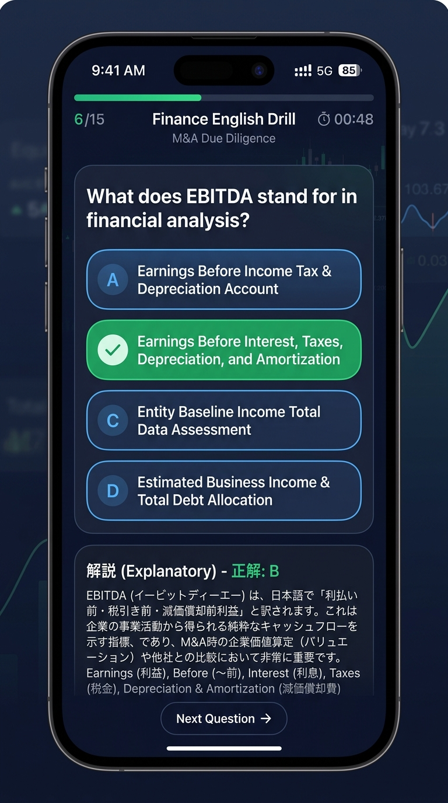
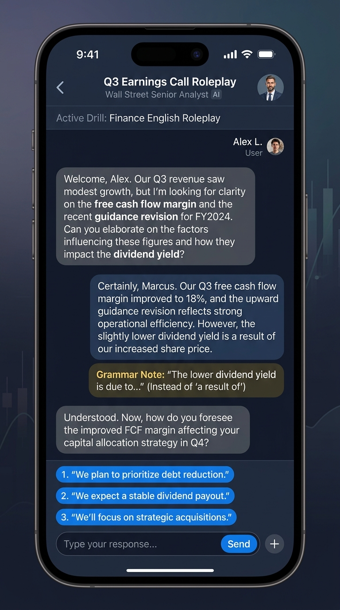
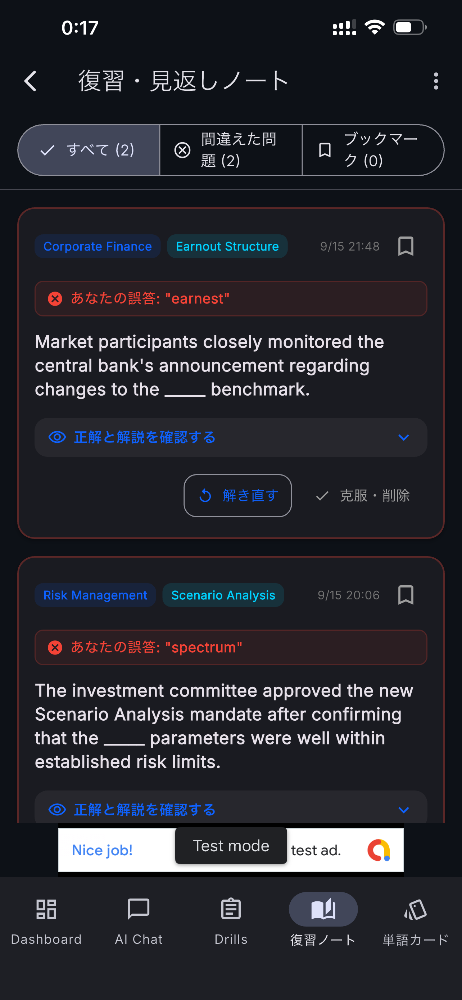

金融英語ドリル
Wall Street & Global Finance
1日5分で身につける、グローバル金融・会計・投資の実務英語。
決算発表・M&A・デューデリジェンス・財務諸表・市場分析など、
実際のファイナンス現場で使われるプロフェッショナル英語を効率よく習得。
金融英語ドリルとは？
金融英語ドリルは、グローバルな金融・財務・会計分野で必要となる高度な英語コミュニケーションを効率よく学ぶための実践型学習アプリです。
一般的な日常英会話や抽象的なビジネス英語ではなく、投資銀行（IBD）、アセットマネジメント、企業財務（CFOオフィス）、M&Aアドバイザリー、会計監査、リスク管理、フィンテックなどの現場で日常的に交わされる「実務英語」を厳選して収録しています。
決算インタビューでの質疑応答、財務諸表の分析報告、M&AやLBOの価格交渉、ファンドのピッチブック作成など、即戦力となる知識と英語力を養います。
📈 実務直結の金融英語
EBITDA、Free Cash Flow、Cap Table、Syndicated Loanなど、実際のファイナンス現場で必須の用語や文脈表現を学習します。
🤝 交渉・分析・プレゼン
決算アナリスト会見やM&Aデューデリジェンスでの質疑、リスク報告など、プロフェッショナルなやり取りに対応。
📚 1日5分のスキマ時間学習
4択クイズ形式でテンポよく進められるため、忙しいビジネスパーソンでも通勤時やスキマ時間に継続できます。
どんな金融英語を学べる？
金融英語ドリルでは、単語の暗記にとどまらず、実際のプロジェクトや取引現場で直面するシチュエーションを想定して学習します。
📈 決算発表・IR・財務諸表
Revenue guidance、margin expansion、Free Cash Flow、Balance Sheet、Income Statementなどの決算分析・業績予想の表現を学びます。
🤝 M&A・企業買収・DD
Valuation、due diligence、synergy、EBITDA multiple、letter of intent (LOI) など、M&A実務や買収交渉で必須の英語を学習します。
🏦 投資銀行・株式・債券
Equity research、underwriting、IPO、yield curve、syndicated loan、capital market など資本市場の取引英語を網羅。
📊 会計・監査・コンプライアンス
US GAAP、IFRS、amortization schedule、internal audit、regulatory compliance などの会計監査・内部統制表現を扱います。
💼 企業財務・CFOオフィス
Capital structure、working capital optimization、debt refinancing、budget allocation など企業主体の財務戦略英語を学びます。
🌐 マクロ経済・市場分析
Federal Reserve、monetary policy、rate hike/cut、inflation pressure、FX volatility などの市場動向報告英語を習得します。
主な機能
160問以上の実践金融英語ドリル
ウォール街やグローバル企業で実際に登場する160以上の豊富な問題文・会話文を4択クイズ形式で学べます。
各問題には丁寧な解説と日本語訳がついており、「なぜこの単語・表現が金融の文脈で使われるのか」を本質的に理解できます。

金融・投資のプロを想定したAIロールプレイ
Senior Analyst、CFO、Risk Manager、Investment Bankerなどとチャット形式でレッスンが可能。
決算Q&AやM&Aデューデリジェンスなど実際の現場を模したシナリオで、英語での返答力・文法改善のアドバイスが得られます。

単語カード＆単語一覧機能
金融専門用語（EBITDA、Valuation、Syndicated Loan、Cap Tableなど）をカード形式で手軽に暗記・チェック。
さらに、収録用語や保存した重要単語をカテゴリ別にまとめて一覧表示（単語一覧）できる機能を搭載。スキマ時間に全体を俯瞰して一気にチェック・復習が可能です。

復習ノートとオンデバイスAI
間違えた問題や覚えたい単語を「復習ノート」に登録し、弱点を効率的に反復学習。
端末内で軽量AIモデル（Qwen2.5-Instruct）をローカル実行できるオンデバイスLLM機能を搭載。オフライン環境でもAI生成学習が可能です。

基本的な学習方法
忙しい実務の合間でも継続できるよう、数分で完結するスマートな学習サイクルを実現しています。
4択ドリルに挑戦
金融・ファイナンスに関連する英語表現の問題に回答します。
詳細な解説と日本語訳を確認
専門用語のニュアンスや財務文脈での使われ方を解説で学びます。
単語カード・一覧リストでレビュー
単語カードでの反復暗記に加え、登録単語やカテゴリ別の用語一覧をリスト形式で一括レビューします。
AIチャットで実戦演習
AIアナリストやCFOとのロールプレイでリアルな英語アウトプットを鍛えます。
こんな方におすすめ
🏦 投資銀行・証券アナリスト
海外投資家向けピッチ、カバレッジレポート作成、決算電話会議（Earnings Call）の英語を強化したい方。
💼 企業財務・経理・CFO室
グローバル事業の資金調達、IR対応、海外子会社との財務協議・グループ予算管理を担当する方。
📊 公認会計士・税理士・コンサル
外資系クライアント対応、国際会計基準（IFRS/US GAAP）監査、M&Aデューデリジェンスレポートを扱う方。
🌐 アセットマネジメント・フィンテック
ファンド運用、リスク管理、フィンテックプロダクトのグローバル展開に携わる方。
よくある質問
このアプリはどのような人向けですか？
一般的なビジネス英語アプリとの違いは何ですか？
金融の知識が浅くても利用できますか？
AI機能はオフラインでも利用できますか？
単語カードや用語一覧の復習機能はありますか？
アプリの利用料金はいくらですか？
関連キーワード
Finance English / Investment Banking / Financial Analysis / Corporate Finance / M&A Due Diligence / Accounting English / Balance Sheet / Valuation / Private Equity / Asset Management / FinTech / Earnings Call / EBITDA
金融英語 / ファイナンス英語 / 会計英語 / 投資銀行英語 / M&A英語 / 財務諸表英語 / デューデリジェンス / 決算英語 / 英文会計 / ビジネス英語 / 外資系金融 / アセットマネジメント / 英語ドリル / AI英語学習
グローバル金融を生き抜く英語力を、毎日の習慣に。
金融英語ドリルで、ウォール街やグローバルビジネスの最前線で通用する実務英語を少しずつ身につけていきましょう。
App Storeから入手する